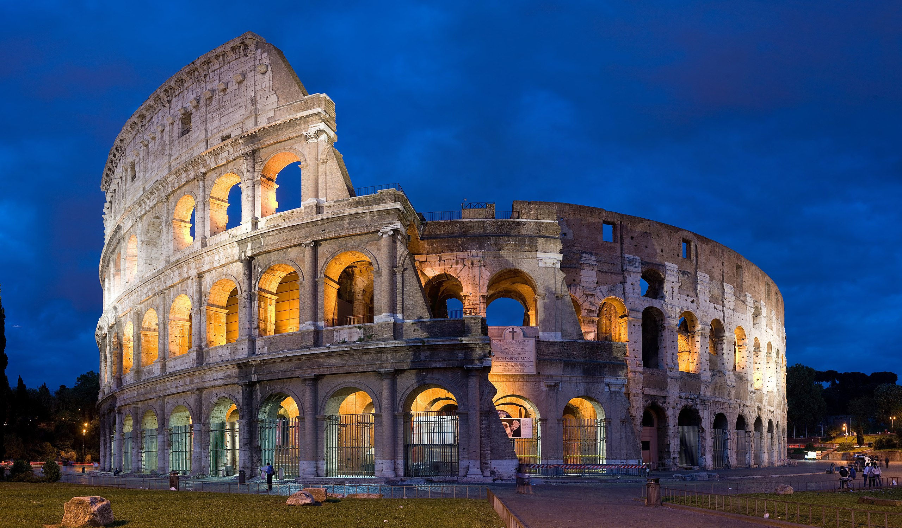
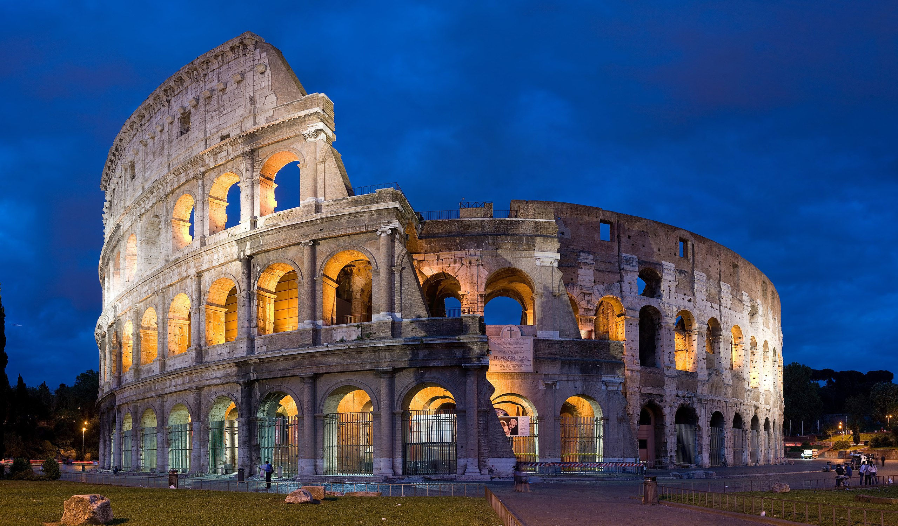

This huge amphitheater, the largest of its kind ever built by the Roman Empire and the largest of their constructions to survive, remained a model for sports facilities right up to modern times. Built by Vespasian in 72 CE and enlarged by the addition of a fourth story by his son, Titus, it was a venue for public spectacles and shows - even mock sea battles. A wooden floor that was 83 by 48 meters covered two additional underground stories with tunnels, rooms, cells, and passages that provided space for gladiators, workers, wild animals, and storage.
Regarded as one of the finest cathedrals in the world, the Duomo Santa Maria del Fiore, or the Cathedral of Santa Maria del Fiore, dominates the Florence skyline. The cathedral was built between the 13th and 15th centuries, with the most famous piece being the extraordinary dome, completed by Filippo Brunelleschi in 1434.The cathedral's bell tower stands close beside the cathedral in Piazza del Duomo, covered in the same patterned marble typical of Tuscan Romanesque architecture.Designed by Giotto, the campanile stands 82 meters tall, and you can climb the 414 steps up to a viewing platform with fantastic views of the city and the dome.
{kind=link}
{kind=link}
{kind=link}